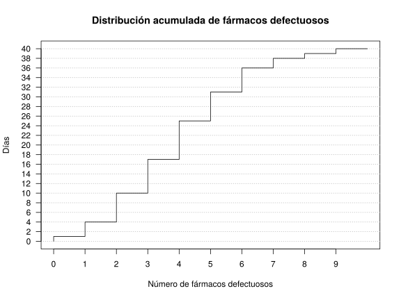

Examen de Farmacia 2018-12-17 Grados: Farmacia y Biotecnología Fecha: 17 de Diciembre de 2018 Ejercicio 1 El siguiente gráfico representa la distribución acumulada del número de fármacos defectuosos diarios producidos por una máquina en una muestra de 40 fármacos.  Construir la tabla de frecuencias del número de fármacos defectuosos. Dibujar el diagrama de caja y bigotes del número de fármacos defectuosos. Estudiar la asimetría de la distribución del número de fármacos defectuosos. Si el número de fármacos defectuosos producidos por una segunda máquina sigue la ecuación $y=3x+2$, donde $x$ e $y$ son el número de fármacos defectuosos producidos con la primera y la segunda máquina respectivamente, ¿en qué máquina es más representativa la media del número de fármacos defectuosos? ¿Qué número de fármacos defectuosos es relativamente menor, 3 fármacos en la primera máquina o 9 fármacos en la segunda? Solución $$\begin{array}{|c|r|r|r|r|} \hline \mbox{Fármacos defectuosos} & n_i & f_i & N_i & F_i \newline \hline 0 & 1 & 0.025 & 1 & 0.025 \newline 1 & 3 & 0.075 & 4 & 0.100 \newline 2 & 6 & 0.150 & 10 & 0.250 \newline 3 & 7 & 0.175 & 17 & 0.425 \newline 4 & 8 & 0.200 & 25 & 0.625 \newline 5 & 6 & 0.150 & 31 & 0.775 \newline 6 & 5 & 0.125 & 36 & 0.900 \newline 7 & 2 & 0.050 & 38 & 0.950 \newline 8 & 1 & 0.025 & 39 & 0.975 \newline 9 & 1 & 0.025 & 40 & 1.000 \newline \hline \end{array} $$ $\bar x=3.975$ fármacos, $s_x=1.9936$ fármacos y $g_1=0.3184$. Por tanto, la distribución es un poco asimétrica hacia la derecha. $cv_x=0.5015$, $\bar y=13.925$ fármacos, $s_y=5.9808$ fármacos y $cv_y=0.4295$. Así pues, la media de $y$ es más representativa que la media de $x$ ya que su coeficiente de variación es menor. $z_x=-0.4891$ y $z_y=-0.8235$, por tanto, 9 fármacos defectuosos en la máquina $y$ es relativamente menor. Ejercicio 2 Un laboratorio farmacéutico fabrica dos modelos de tensiómetro, uno de brazo y otro de muñeca. Para comprobar la precisión de los mismos se ha realizado un control de calidad tomando la tensión a 20 pacientes y se han obtenido obtenido los siguientes resultados: $\sum x_i=265.4$ mmHg, $\sum y_i=262.5$ mmHg , $\sum z_i=262.4$ mmHg, $\sum x_i^2=3701.14$ mmHg$^2$, $\sum y_i^2=3629.41$ mmHg$^2$, $\sum z_i^2=3615.38$ mmHg$^2$, $\sum x_iy_j=3658.28$ mmHg$^2$, $\sum x_iz_j=3655.95$ mmHg$^2$, $\sum y_jz_j=3613.97$ mmHg$^2$. Donde $X$ es la tensión con el tensiómetro de brazo, $Y$ con el tensiómetro de muñeca y $Z$ la tensión real. Se pide: ¿Qué tensiómetro predice mejor la tensión real? Si un paciente tiene una tensión real de $13.5$ mmHg, ¿qué se espera que marque el tensiómetro de brazo? Solución Presión arterial con el tensiómetro de brazo: $\bar x=13.27$ mmHg, $s^2_x=8.9641$ mmHg². Presión arterial con el tensiómetro de muñeca: $\bar y=13.125$ mmHg, $s^2_y=9.2049$ mmHg². Presión arterial real: $\bar z=13.12$ mmHg, $s^2_z=8.6346$ mmHg². $s_{xz}=8.6951$ mmHg², $s_{yz}=8.4985$ mmHg², $r^2_{xz}=0.9768$ y $r^2_{yz}=0.9087$. Así pues, el tensiómetro de brazo predice mejor la presión arterial real con un modelo de regresión lineal ya que el coeficiente de determinación lineal es mayor. Recta de regresión de $X$ sobre $Z$: $x=0.0581+1.007z$. Predicción: $x(13.5)=13.6527$ mmHg. Ejercicio 3 La recta de regresión de $Y$ sobre $X$ es $y=1.2x-0.6$. Se pide: Indicar razonadamente cuáles de las siguientes rectas no pueden ser las recta de regresión de $X$ sobre $Y$. $x=0.9y-0.6$ $x=-0.7y+0.4$ $x=0.8y-0.7$ $x=-0.6y-0.5$ $x=0.4y-0.6$ $x=-0.5y+0.9$ Entre las que puedan ser indicar razonadamente con cuál de ellas serían más fiables las predicciones. Solución (b), (d) y (f) no son posibles porque tienen pendiente negativa, y (a) no es posible porque el coeficiente de determinación lineal es mayor que 1. (c) da las mejores predicciones porque su coeficiente de determinación es mayor. Ejercicio 4 En un estudio epidemiológico se tomó una muestra de 400 personas con cáncer de pulmón y otra de 1200 sin cáncer de pulmón. Entre las personas con cáncer de pulmón se observó que había 180 fumadoras, mientras que entre las personas sin cáncer de pulmón había 1140 no fumadoras. Se pide: Calcular el riesgo relativo de desarrollar cáncer al fumar e interpretarlo. Calcular el odds ratio de desarrollar cáncer al fumar e interpretarlo. Solución Sea $C$ el evento correspondiente a tener cáncer de pulmón. $RR(C)=9$. Esto quiere decir que la probabilidad de tener cancer de pulmón al fumar es 9 veces mayor que sin fumar. $OR(C)=15.5455$. Como es positivo existe una asociación directa entre fumar y tener cáncer de pulmón. El odds de tener cáncer de pulmón si se fuma es más the 15 veces mayor que si no se fuma. Ejercicio 5 Se quiere desarrollar un test diagnóstico que sirva para descartar una enfermedad cuando el test es negativo (valor predictivo negativo) con al menos una probabilidad del 90% para aplicarlo en una población en la que se sabe que hay un 15% de individuos que presentan la enfermedad. Si la sensibilidad del test se ha establecido en un 80%, ¿Qué especificidad mínima tendría que tener el test? ¿Cuál sería en ese caso su probabilidad de diagnóstico correcto? ¿Cuál sería la probabilidad de descartar la enfermedad en un paciente que se le ha aplicado dos veces el test y ha dado negativo en ambos casos? Solución Sea $E$ el evento correspondiente a tener la enfermedad y $+$ y $-$ los eventos correspondientes a tener un resultado positivo o negativo en el test diagnóstico respectivamente. Especificidad mínima $P(-|\overline{E})=0.3176$. $P(VP) + P(VN) = P(E\cap +) + P(\overline{E}\cap -) = 0.12+0.27 = 0.39$. $P(\overline{E}| -_1\cap -_2)=0.9346$. Ejercicio 6 Se sabe que en una ciudad una de cada 20 personas, por término medio, tiene sangre del tipo $AB$. Si se eligen al azar doscientos donantes de sangre, ¿cuál es la probabilidad de que al menos 5 tengan sangre de tipo $AB$? Si se eligen al azar 10 personas, ¿cuál es la probabilidad de que haya más de 8 con grupo sanguíneo distinto de $AB$? Solución Sea $X$ el número de donantes con grupo sanguíneo $AB$ en una muestra de 200 donantes de sangre. Entonces, $X\sim B(200,1/20)\approx P(10)$, y $P(X\geq 5)=0.9707$. Sea $Y$ el número de donantes con grupo sanguíneo distinto de $AB$ en una muestra de 10 donantes. Entonces, $Y\sim B(10,19/20)$, y $P(Y>8)=0.9139$. Ejercicio 7 En una asignatura hay 230 alumnos, de los cuales 150 son chicas y 80 chicos. Se sabe que las notas siguen distribuciones normales con la misma desviación típica en las chicas y en los chicos. Si hay 120 chicas y 56 chicos que tienen una nota superior a 5 y 36 chicos tienen una nota entre 5 y 7. Se pide: Las medias y las desviaciones típicas de las notas de chicas y chicos. ¿Cuántas chicas tendrán una nota entre 4.5 y 8? ¿Por encima de qué nota estarán el 10% de las chicas? Solución Sea $X$ la nota de un chico aleatorio del curso e $Y$ la nota de una chica aleatoria del curso. Entonces, $X\sim N(\mu_x,\sigma)$ y $Y\sim N(\mu_y,\sigma)$. $\mu_x=5.87$, $\mu_y=6.41$ y $\sigma=1.68$. $P(4.5\leq Y\leq 8) = 0.7018$, es decir, $105.27$ chicas. $P_{90}=8.8$. Examen Anterior Examen de Farmacia 2019-12-16 Siguiente Examen de Farmacia 2018-01-19